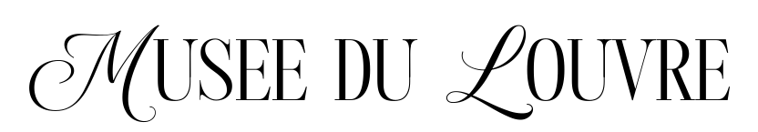
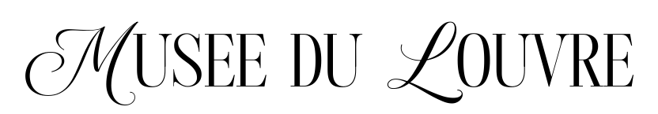

 
Museo
Louvre, museo nacional y galería de arte de Francia, ubicado en parte de un gran palacio en París que fue construido en el sitio de la fortaleza del siglo XII de Felipe Augusto. Es el museo de arte más visitado del mundo, con una colección que abarca obras de civilizaciones antiguas hasta mediados del siglo XIX. La principal atracción para los visitantes es la Mona Lisa de Leonardo da Vinci (c. 1503–19), así como la Venus de Milo (150–125 a. C.) y la Victoria Alada de Samotracia (200–175 a. C.).
Festival

Festival Noema es una invitación a romper inercias, a dialogar sin filtros y a encender la chispa de una nueva conciencia colectiva. A las afueras del icónico Museo del Louvre, en el corazón vivo de París, surge Festival Noema, un espacio dedicado al pensamiento crítico, la literatura disruptiva y el análisis profundo de los sistemas que moldean nuestra realidad. Noema es más que un festival: es un llamado a despertar, cuestionar y reconstruir la forma en que entendemos el mundo.
Contenido

Estas obras serán exploradas en mesas de diálogo, lecturas guiadas y análisis contemporáneos.


LineUp
Lugar: Explanada del Louvre, París (varios espacios: Main Hall, Screening Room, Forum, Workshop Room, Terrace Fechas: 13–15 de febrero de 2026 Horarios mostrados en CET (Hora de París) (Equivalente aproximado: America/Matamoros = CET −7 horas


Domingo — Entrada Libre • No Cover El domingo 15 de febrero de 2026, el Festival NOEMA abre sus puertas totalmente gratis para que cualquier visitante pueda disfrutar de las actividades finales del encuentro. Horario: 09:00 — 20:30